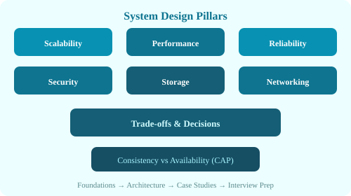

| Approach | What It Means | Pros | Cons |
|---|---|---|---|
| Vertical (Scale Up) | Add more power to existing machines (CPU, RAM, disk) | Simple, no code changes | Hardware limits, expensive at high end, single point of failure |
| Horizontal (Scale Out) | Add more machines to the pool | Theoretically infinite, cost-effective, fault-tolerant | Requires load balancers, distributed coordination, code changes |
| Diagonal | Vertical within a tier, horizontal across tiers | Balanced approach | Complexity of both |
# Horizontal scaling pattern
[Users] → [Load Balancer] → [App Server 1] → [Shared DB]
[App Server 2]
[App Server N]
# Stateless apps scale easily; stateful (DB) requires sharding/replicationBeyond basic distribution, modern load balancers provide:
Auto-scaling automatically adjusts the number of compute resources based on demand. Metrics-based (CPU > 70% → add instance) or schedule-based (scale up at 8 AM, scale down at 10 PM).
# Auto-scaling configuration (conceptual)
AutoScalingGroup:
min: 2
max: 20
target_cpu: 60%
scale_up:
cooldown: 120s
adjustment: +2 instances
scale_down:
cooldown: 300s
adjustment: -1 instanceSharding splits a large database into smaller, independent databases (shards). Each shard holds a subset of the data, typically determined by a shard key.
# Shard key = user_id % 4
Shard 0: user_id % 4 == 0
Shard 1: user_id % 4 == 1
Shard 2: user_id % 4 == 2
Shard 3: user_id % 4 == 3Challenges: Choosing a good shard key, resharding (adding more shards), cross-shard queries, distributed transactions.
A distributed system can only guarantee two of three properties simultaneously:

In practice, network partitions will happen, so you choose between CP and AP. CA is not possible in distributed systems.